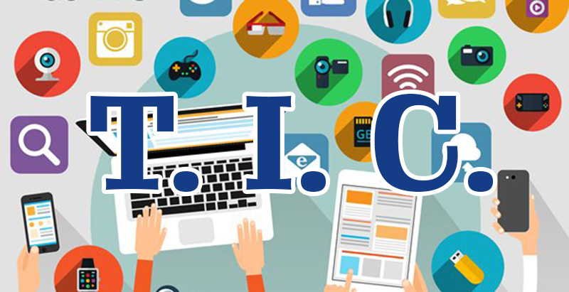

Importancia del uso de las tecnologías en las actividades cotidianas en las profesiones

Ciencias de la salud:
Diagnóstico y tratamiento: Las tecnologías médicas, como la telemedicina, la inteligencia artificial y la realidad virtual, brindan herramientas para el diagnóstico preciso y el desarrollo de tratamientos personalizados. Estas tecnologías permiten la monitorización remota de pacientes, la gestión de enfermedades crónicas y la mejora de la atención médica en áreas rurales y de difícil acceso.
Registros electrónicos de salud: Los sistemas electrónicos de registro médico y las aplicaciones de salud móvil permiten el seguimiento de datos de salud de los pacientes, la gestión de medicamentos y la comunicación fluida entre profesionales de la salud y pacientes. Esto mejora la calidad de la atención y la toma de decisiones clínicas.
Ciencias de la comunicación:
Comunicación digital: Las tecnologías de la información y comunicación han revolucionado la forma en que nos comunicamos. Las redes sociales, los blogs, los podcasts y las plataformas de transmisión en línea permiten la difusión de información, la participación ciudadana y la construcción de comunidades en línea. Además, las herramientas de análisis de datos ayudan a comprender las tendencias y preferencias de la audiencia.
Producción y distribución de contenido: Las tecnologías digitales y la edición de video permiten la producción de contenido multimedia de alta calidad, facilitando la creación de noticias, documentales y material educativo. La distribución en línea de este contenido a través de plataformas digitales alcanza a audiencias globales de manera rápida y eficiente.
Historia:
Investigación y conservación del patrimonio: Las tecnologías digitales facilitan la investigación histórica al proporcionar acceso a archivos y bibliotecas en línea, así como a herramientas de análisis de datos. La digitalización de documentos y objetos históricos permite su conservación y acceso a un público más amplio, preservando el patrimonio cultural.
Visualización y narración: Las tecnologías multimedia, como la realidad virtual y la realidad aumentada, permiten una experiencia inmersiva en la historia. Esto enriquece la narración histórica y facilita la comprensión de eventos pasados.
Ecología:
Monitoreo y conservación del medio ambiente: Las tecnologías de sensores, satélites y análisis de datos permiten el monitoreo continuo del medio ambiente, incluyendo la calidad del aire, la biodiversidad y el cambio climático. Esto ayuda a comprender los impactos ambientales y a tomar medidas para su conservación.
Educación y conciencia ambiental: Las tecnologías digitales ofrecen herramientas interactivas y educativas para promover la conciencia ambiental y el aprendizaje sobre la ecología. Aplicaciones, juegos y plataformas en línea facilitan la divulgación de conocimientos y fomentan acciones sostenibles.
En resumen, el uso de tecnologías en las actividades cotidianas y profesiones en campos como las ciencias de la salud, las ciencias de la comunicación, la historia y la ecología es crucial para mejorar la eficiencia, la comunicación, la investigación y la conservación en estos campos. La transversalidad de las tecnologías en estas áreas permite un enfoque multidisciplinario y una colaboración efectiva para abordar desafíos y promover avances en la sociedad.
El uso de tecnologías en las actividades cotidianas y en diversas profesiones es esencial en el contexto actual, y su importancia se extiende a campos como las ciencias de la salud, las ciencias de la comunicación, la historia y la ecología,entre otras mas. A continuación, se presenta la relevancia del uso de tecnologías en estas áreas y su transversalidad: